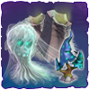

Получено: файл; исходный URL. Изображение из индекса серии, загружено без перекодирования; точное соответствие игровому экрану и авторство не установлены. Идентичность файлов разных хостов не проверена. Страница: источник.

Ожидание и реальность — Космический карнавал
браузерная игра; сеть и версия требуют сверки- Тип
- Задание
- Версия и дата
- браузерная игра; сеть и версия требуют сверки
Данные по источнику · браузерная игра; платформа не уточнена · 2015 — дата статьи; последующая правка не датирована
Предварительно: Фанатский источник; текст статьи может содержать ошибки, поздние изменения и отличия между версиями.. Требуется сверка.
- Порядок
- 8 из 9 по индексу серии.
- Сюжет
- Как же здесь темно и холодно! И очень жутко! А праздничной и карнавальной обстановки и вовсе нет - одни могилы и привидения.
- Цели
- 1. Выруби такие кратеры. Количество - 10 . Нельзя пропустить. | 2. Прогони таких призраков. Количество - 10 . Нельзя пропустить. | 3. Собери такие грибы. Количество - 10 . Нельзя пропустить.
- Награда
- 25 Посох
- Время
- Индекс называет серию временной к Хэллоуину 2015; точный срок не указан. Если цена пропуска не показана, нельзя заключать, что пропуск невозможен.
Связанные сущности
- В путь — Космический карнавал — предыдущее задание
- Мавзолей — Космический карнавал — следующее задание
- В путь — Космический карнавал — следующее задание
- Мавзолей — Космический карнавал — предыдущее задание